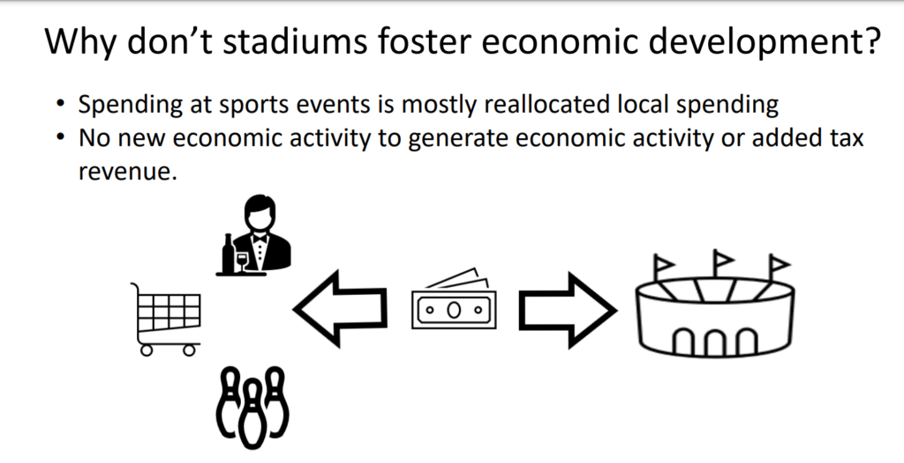
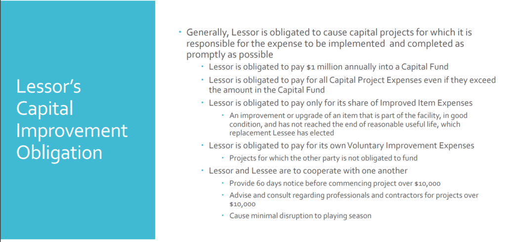
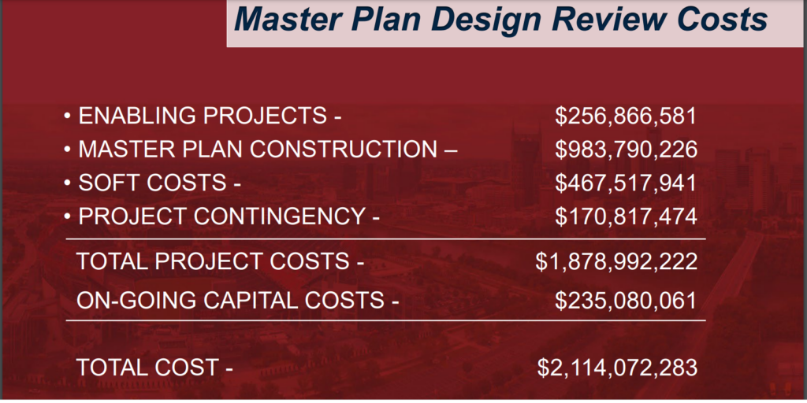
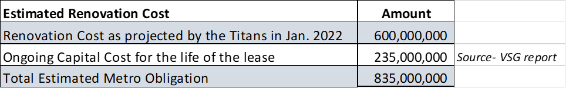
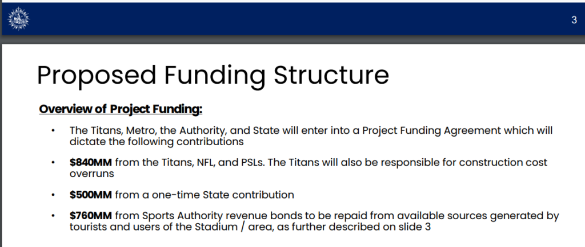
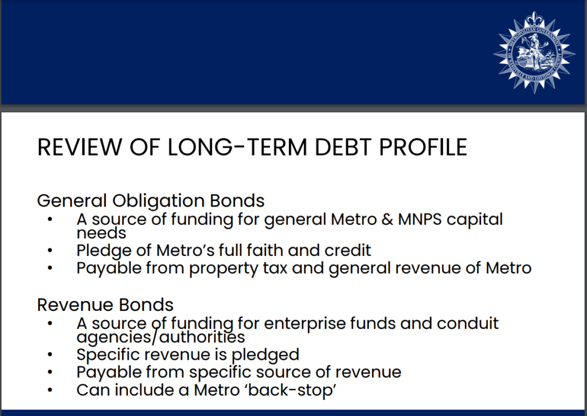
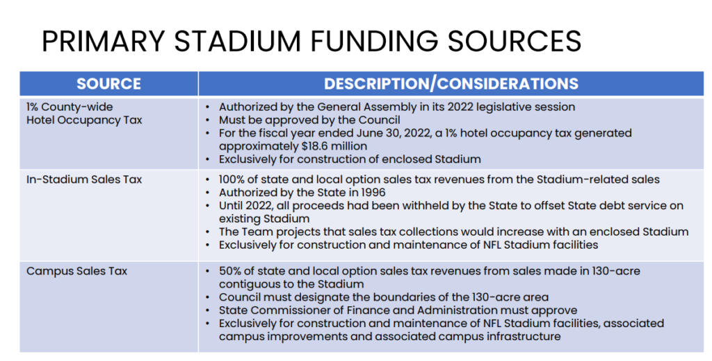
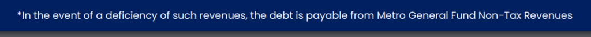
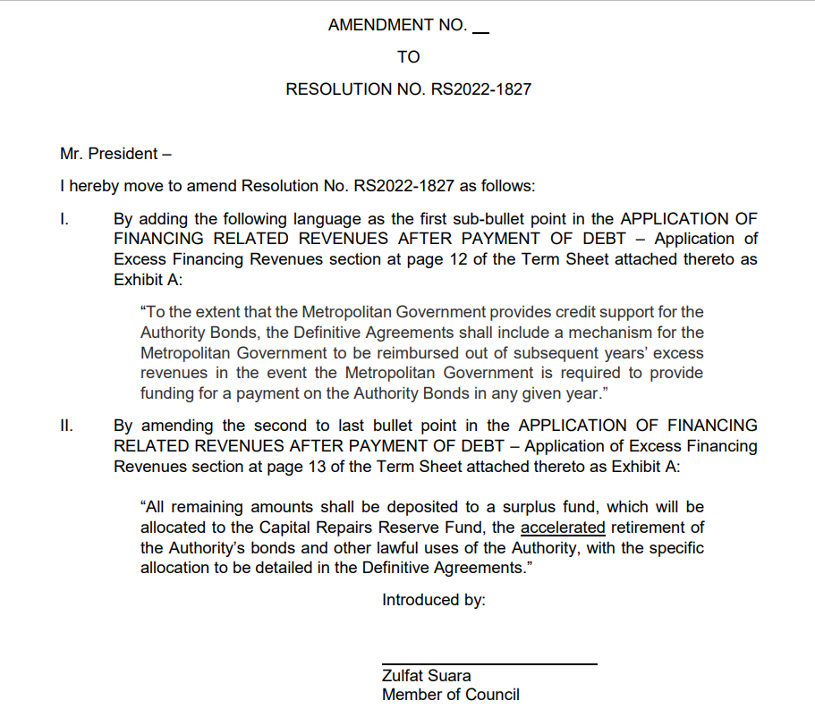

The Titan’s Stadium Term Sheet- My Vote and Why
For the past couple of months, I have participated in and listened to the conversations around the new Titans’ stadium deal. Thanks to CM Mendes’s leadership, there were ample opportunities for community and expert input. I attended 4 public hearings around the county. I want to thank everyone that took the time to share their opinions with us, via email or in person. Your perspective and your questions are instrumental in my decision.
Reaching a decision was not easy but I have to dissect every piece of information and look at things objectively. At the core of my decision is what is best for the citizens based on the information that I have. We may not agree on every decision but I owe you all an explanation of how I got there.
Below are some of the questions I had to answer to reach a decision
1. Should taxpayers be subsidizing an NFL team?
I agree with many of you that the answer is No. The team is a private company that makes money. Subsidizing a rich team while neglecting some of the basic needs of our residents is not prudent. In addition, an economist, Professor JC Bradbury, during his November 17 presentation to the East Bank Committee, shared that “nearly all empirical studies find little to no tangible impacts of sports teams and facilities on local economic activity, and the level of venue subsidies typically provided far exceeds any observed economic benefits.”
To access the complete presentation, click here

2. If there is limited economic gain, why is Metro entertaining the idea of a new stadium?
As many of you are aware, Metro must consider this, because of the agreement signed many years ago. The 1996 agreement put Metro on the hook for upgrading the facility. As a friend rightly said, unless we can travel back in time to 1996 and change the terms of the deal that was signed then, we are stuck. Unfortunately, since Metro is responsible for keeping up the building, the decision is whether to renovate or build a new stadium.

A 3rd option of not doing anything is being floated. The Titans may or may not sue the city for breaking the lease if this 3rd option is chosen. The associated cost could result in a large liability to the residents if they do. I believe breaking a lease and exposing the county to a probable contingent liability is an option, but not a great one.
3. Renovate or Build?
There are lots of misconceptions and wrong/false information that is being thrown around regarding this project. To complicate things, so many numbers are also being thrown around, making it difficult to understand. To arrive at my decision I have to look at three main components: COST, FUNDING SOURCES, and LIABILITY. It was also important for me to separate the facts from the false or sensational information regarding these components.
4. Costs
COST OF RENOVATION
This has been the most difficult piece of information to obtain during this process. It didn’t help that the consultant paid by Metro did not deliver on the council’s expectations. The most important question to me and my colleagues was knowing the minimal amount of renovation required to meet the terms of the current lease. Unfortunately, I left the VSG presentation to the East Bank Committee, upset that the most important question was not answered.
To make things worse, the report only had one comparable facility, whereas several facilities were named in the lease. Why did the report not include information about others? Finally, the report did not adequately explain how the cost of renovation grew from $297M in 2017 to $2.1B in 2022. The VSG presentation created a lot of confusion and raised a lot of questions.

WHAT IS THE REASONABLE COST OF RENOVATION?
I agree with residents that the $2.1B renovation cost presented by VSG is neither reasonable nor accurate. However, considering the increase in the cost of living, the rising cost of real estate in Nashville, and the fact that the cost to build new stadiums is now billions, it is reasonable to assume that the 2017 estimated cost of $297M is also not a reasonable amount.
In January 2022, the Titans estimated the cost of renovation to be $600M. I believe this amount is reasonable. Based on January 2022 amount, the total metro obligation for the renovation of the stadium can be estimated at $835M.

COST OF NEW STADIUM?
The estimated cost of the new stadium is $2.1B to be financed as follows:

While the total cost is $2.1B, it is important to clarify that the cost to Metro Davidson residents is $760M. Just as there was misinformation on the total cost of renovation, there is misinformation on the total Davidson city taxpayer burden on the new building.
Metro government and residents will neither be responsible for the $840M by the Titans nor will they be responsible for the $500M by the state. While I understand that the state portion is taxpayer funding, the decision on how and what it can be spent on is outside of the Metro government. Therefore arguing that the cost of a new stadium to the metro taxpayers is $2.1B is as misleading as the $2.1B renovation cost.
COMPARABLE COST
Based on the above analysis, I believe the cost of renovating the stadium (835M) and building a new one ($760M) are comparable.
It is important to note that the actual cost of renovation may be higher than calculated. Once renovation starts, Metro will be on the hook for any additional costs due to inflation or other market factors. Therefore, any cost higher than estimated is a detriment to the taxpayers.
On the other hand, the Metro’s cost of building a new stadium is absolute. Meaning Metro is only responsible for $760M of the construction cost. If the final cost of building a new stadium is higher than projected, Metro’s obligation will not change. This is because the Titans are responsible for all cost overruns on the project.
5. Funding Mechanism
An important distinction between renovation and building a new stadium is in the funding sources. The cost of the renovations will be via General Obligations Bonds (GO Bonds) while the new stadium as proposed will be funded using Revenue Bonds.

One of the toughest decisions I have had to make as a council member was voting for the last property tax increase. Though the increase was necessary and the right decision, it did not make it any less painful. During the process, taxpayers continually ask the council to find alternative revenue sources. Many indicated that tourist and out-of-towners are not paying their fair share.
With this in mind, I am in favor of financing sources that shift payment from residents (property taxes via GO Bonds) to tourists (hotel and stadium sales tax via revenue bonds). Some will argue that hotel ta is no tourist tax. I beg to differ. While residents may stay in hotels, the majority of folks that use hotels are out-of-towners.
6. These are estimates, who is responsible for the increase?
INITIAL COST
As indicated above, Metro will be responsible for any additional cost over the estimate for the stadium renovations, while the Titans will pay all cost overruns on the new stadium. See the article on the hidden cost of stadium renovations at https://www.stadia-magazine.com/news/renovation-refurbishment/the-hidden-costs-of-stadium-and-arena-renovation.html
ONGOING COSTS
Per the current lease agreement, Metro is responsible for the ongoing capital cost of the current stadium. This cost is estimated by VSG at $235M. This cost by nature of the funding will be from general funds. Whereas with the new lease, the cost of the ongoing capital improvement will be paid from capital reserve created from excess revenue from the projected revenue streams
7. Bond Payments
WHAT ARE THE SOURCES OF REVENUES THAT WILL BE USED FOR THE PAYMENT OF BONDS?

WHAT IF THE ABOVE REVENUES ARE NOT ENOUGH TO PAY THE BOND?
This is a major concern for many residents and rightfully so. It is also troubling that page 10 of the term sheet indicated that Metro Government will have to guarantee payment in case of revenue shortages.

According to the finance director, the guarantee may be needed due to the uncertainty of some of the revenue sources but also as a way to receive better interest rates. While paying less interest is always desirable, the possibility of placing the burden for any part of the payment on the general fund is against the wish of residents. It does not matter that it is from non-tax revenue sources. Any payment from the general fund should be avoided or mitigated.
Those that love the stadium deal swear that the use of the general funds as a result of the guarantee will never happen but that is a hard risk to take. What if a similar event to COVID limits hotel and sales tax?
To this end, I proposed amendment 6 to the term sheet. The amendment ensures that in the event, that Metro has to pay on this deal from the general fund, those funds will be refunded in subsequent years. The amendments also request that excess payment in the reserve be used to accelerate bond payments.

Conclusion
I have never attended a Titans game and I also believe professor Bradbury that the new stadium has a minimal economic impact. However, my vote in favor of the term sheet is based solely on reducing the burden on the general fund and the taxpayers. I hope that the administration continues to work on a better deal. Any relief to taxpayers is welcomed. However, my vote was based on the better of two bad options.
I also want to reiterate that the term sheet is non-binding. I look forward to receiving the final documents and hope to see the amendments passed in the final documents. I am grateful to my colleagues for pushing many amendments that made the deal better for Nashvillians. I plan to continue to push for more changes and better options for citizens.
We may come to different conclusions but my vote is always based on what I believe is best, for Nashvillians, using the currently available information.
As always, do not hesitate to contact me with your questions, comments, or concerns.
Best,
Zulfat